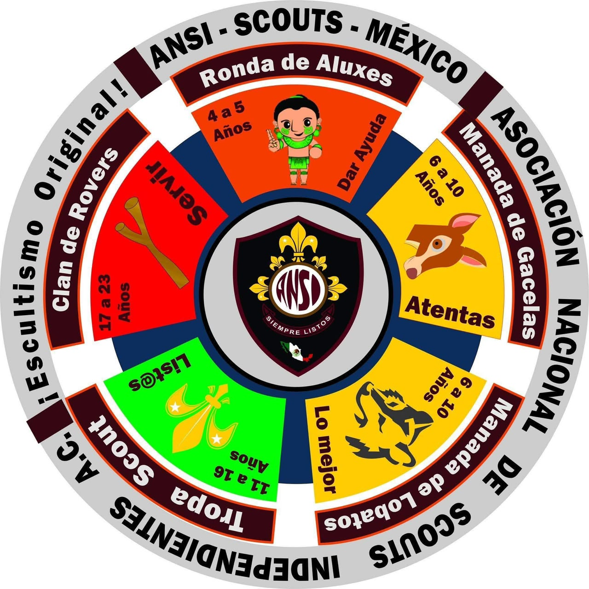

¿Qué es el Grupo Scout?
El Grupo Scout 44 Highlanders es una comunidad de formación y servicio que busca acompañar a niñas, niños y jóvenes en su crecimiento personal, ayudándolos a convertirse en personas íntegras, responsables, solidarias y comprometidas con su comunidad.
Su esencia está en vivir el escultismo como una forma de vida: aprender haciendo, explorar la naturaleza, desarrollar habilidades, trabajar en equipo, asumir responsabilidades y descubrir que siempre hay una oportunidad para servir a los demás.
Pero el 44 Highlanders tiene, además, una identidad propia: la inspiración de los antiguos Highlanders de Escocia, cuyo simbolismo representa el valor, el carácter, la lealtad y el honor. Esa identidad se une a los principios del Movimiento Scout para construir una hermandad en la que cada integrante aprende a superar retos, honrar su palabra y caminar junto a los demás.
Secciones por Edades

¿Qué significa ser parte del 44 Highlanders?
- 🛡️ Lealtad: Cumplir nuestra palabra y permanecer fieles a nuestros principios.
- ⚜️ Honor: Actuar con integridad, incluso cuando nadie nos observa.
- 🤝 Servicio: Poner nuestras capacidades al servicio de quienes nos necesitan.
- 🏕️ Hermandad: Construir una familia scout donde aprendemos, compartimos y crecemos juntos.
- 🧗 Carácter: Enfrentar los retos con valentía, responsabilidad y determinación.
- 🌲 Aventura: Descubrir que cada experiencia, en la naturaleza y en la vida, nos brinda la oportunidad de aprender.
El grupo reúne distintas etapas de formación, desde la Ronda de Aluxes hasta las unidades de Manada, Tropas y Clanes Rovers, donde cada integrante encuentra nuevos desafíos y oportunidades para crecer.
El Espíritu Highlanders
El 44 Highlanders no es solamente un número, un uniforme o un escudo. Es una historia que se construye con cada servicio realizado, cada reto superado, cada amistad que nace y cada persona que decide dejar una huella positiva en los demás.
Es aprender a caminar con honor, permanecer unidos en la adversidad y comprender que la verdadera grandeza no está en ser más que los demás, sino en ser capaces de hacer más por los demás. Porque Escocia es nuestra mística; el Movimiento Scout, nuestro camino; y el servicio, nuestra forma de trascender.
Historia del Grupo
- 📌 Año de fundación
- 📌 Cómo surgió
- 📌 Momentos importantes
- 📌 Evolución del grupo hasta la actualidad
Fotografías de Nuestras Aventuras
Lealtad, Honor y Gloria